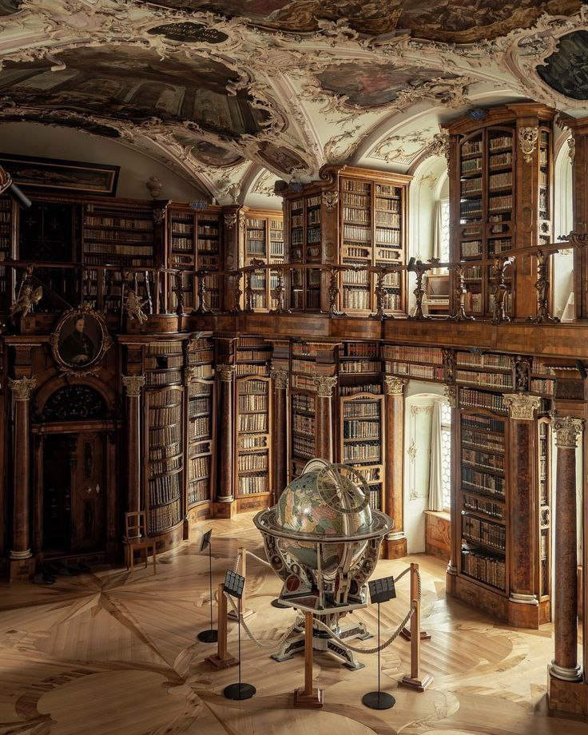
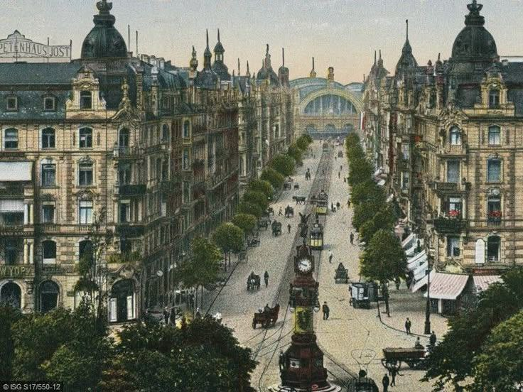
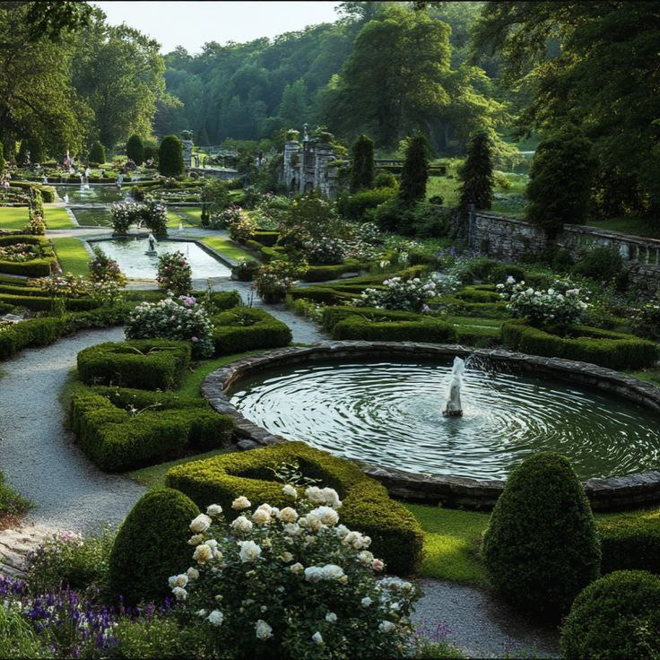
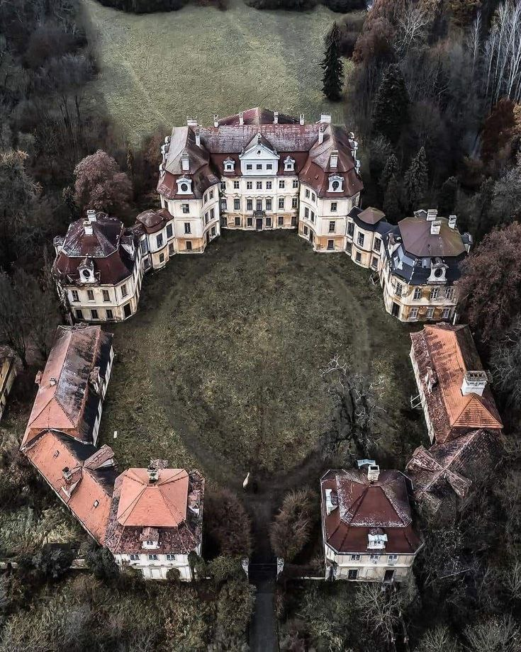
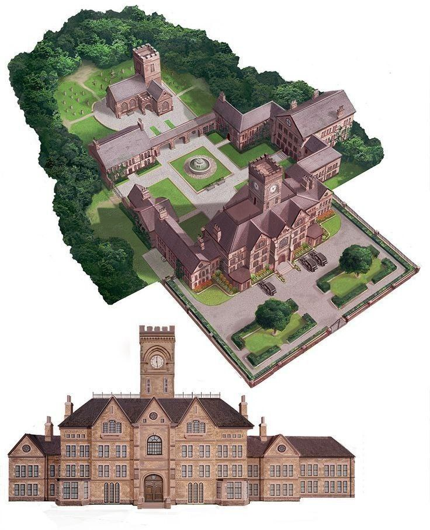
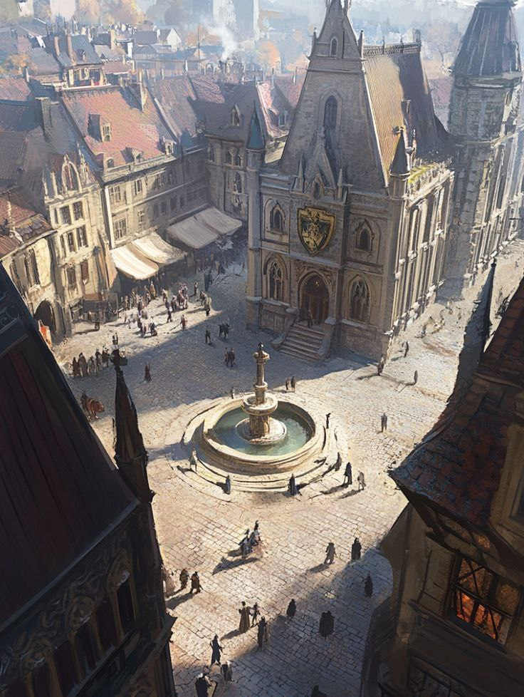
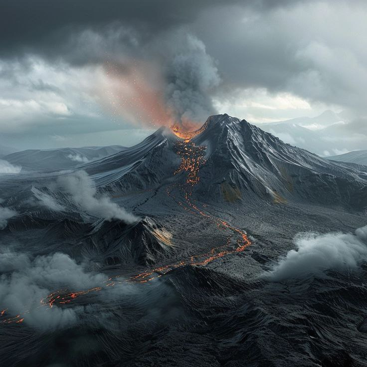

Городская библиотека
Величественная историческая библиотека с высокими деревянными стеллажами, заполненными книгами. По периметру второго яруса тянется балюстрада с резными колоннами и богатой декоративной отделкой, а потолок украшен фресками и лепниной в сложном орнаменте. В центре зала стоит большой старинный глобус на резном металлическом основании, огороженный тросиками и информационными табличками. Сквозь высокие окна льётся мягкий дневной свет, подчёркивая тёплые тона дерева и сложный узор паркета. Атмосфера помещения — торжественная и умиротворённая, место вызывает ассоциации с академической или монастырской библиотекой прошлых веков.

Главная улица города
По обеим сторонам улицы тянутся плотные ряды монументальных каменных домов с богато декорированными фасадами, мансардными крышами и башенками в стиле конца XIX — начала XX века. Посередине улицы проходит трамвайная линия: видны несколько трамваев, трамвайные столбы и рельсы; в центре ближе к переднему плану — высокая колонна с часами. На тротуарах и проезжей части мелкие фигуры пешеходов, карет и отдельных ранних автомобилей, а также уличные деревья, формирующие зелёные полосы вдоль улицы. В глубине кадра заметно большое здание с широкой арочной стеклянной фасадой, напоминающее выставочный зал.

Формальный парковый сад
Аккуратно подстриженные климатические партеры и фигурные кусты, дорожки между ними и несколько декоративных фонтанов/прямоугольных бассейнов с каменными обрамлениями. По краям — цветущие розы и другие цветы, на заднем плане — высокие деревья и заросли, создающие пейзаж усадебного или ботанического сада.

психиатрическая больница
Психиатрическая больница 1995 года, разделённая на взрослую и детскую корпуса.
Общий план
• Центральный, более монументальный корпус — рецепция, администрация, приёмное отделение и основные взрослые палаты. От него отходят симметричные фланки — дневные и лечебные помещения, кабинеты врачей, аптека и процедурные.
• По обеим сторонам, образуя полукольцо, расположены более низкие павильоны — Небольшие боковые корпуса служат хозяйственными и ремесленными мастерскими, кухней и жилыми помещениями для персонала.
Корпус Солнце (взрослый корпус)
• Палаты — смешанного типа: от индивидуальных комнат для соматически тяжёлых больных до палат по 4–6 коек. Мебель простая: металлические кровати, прикроватные тумбочки, шкафы с вещами.
• Есть специальные боксы для наблюдения, процедурная, комната для психотерапии (столы, диван, большая доска), кабинет электро- и фоторецепций, комната для приёма экстренных пациентов.
• Дневной блок оборудован залом для групповой терапии, столовой и курилкой для взрослых. Во дворе — огороженные прогулочные дорожки, где под присмотром пациенты проводят часы дня.
Корпус Орион (детский корпус)
• Корпус для детей оформлен более «домашние»: яркие, но выцветшие постеры, рисунки детей на стенах, уголки с игрушками и настольными играми. Каждое крыло — отдельный «класс» и спальня.
• В расписании — занятия школьного уровня, логопед, арт- и музыкальная терапия, игровые группы. Медицинский отдел для детей ближе к приёмной, чтобы быстро изолировать и обследовать поступающих.
• Прогулочная зона — центральный газон, но всегда под наблюдением — здесь надёжно ограждённый участок с лавочками и песочницей; старший воспитатель и дежурные сидят снаружи в павильоне наблюдения.
Впечатление для посетителя
— Снаружи здание производит впечатление уставшего дворца: величественно, но с налётом заброшенности. Внутри — строгий, упорядоченный мир с расписанием, где детские голоса и тихие разговоры взрослых смешиваются с ритмом будней клиники 1995 года. Центральный газон служит нейтральной территорией — местом прогулок, встреч и тихих разговоров между корпусами взрослой и детской частей.

Школа
Главный корпус выполнен из тёплого кирпича или камня, симметричен: центральный вход с арочным порталом и высокий часовой/наблюдательный башенный элемент, по бокам — протяжённые крылья с многочисленными окнами и дымоходами. Внутренний двор организован вокруг прямоугольной площади с фонтаном в центре и аккуратно выложенными дорожками — типичный квадрант для прогулок и школьных мероприятий. Сзади видна отдельная церковная постройка или часовня с кладбищем/памятной зоной, а вокруг — густой пояс деревьев, создающий уединённый, парк-подобный антураж.
В таких зданиях обычно располагаются аудитории и лаборатории в боковых крыльях, библиотека и администрации в центральной части, спальные помещения и столовая — в соседних корпусах; часовня служит для собраний и церемоний. Атмосфера кажется камерной, престижной и немного старомодной — место, где ценят традиции, тишину и порядок.

Городская площадь
В центре — круглый каменный фонтан с несколькими уровнями и небольшой струёй воды; вокруг него выложены ступени, по которым люди иногда спускаются, чтобы остановиться и поговорить. Площадь окружена плотной застройкой: с одной стороны возвышается монументальное здание с высоким крутым кровлем и большим гербом над арочным входом — оно выглядит как ратуша или суд, с богато декорированным фасадом. С противоположной стороны тянутся ряды узких домиков и лавок с навесами, где скопились посетители и торговцы.
Каменные фасады и черепичные крыши покрыты лёгкой патиной времени, заметны деревянные балки, узкие окна и витые дымоходы — всё это создаёт ощущение старого города. На площади ходят люди в тёплой одежде разных фасонов: небольшие группы, одинокие прохожие, торговцы у прилавков; их силуэты бросают длинные тени, что говорит о низком солнце — либо ранним утром, либо к закату. В воздухе — дымок от очагов и кухни, запахи выпечки и пряностей, слышен человеческий гул, шаги по камню и иногда звон колокола издалека.
В целом место производит впечатление живого, но упорядоченного общественного центра — здесь встречаются, торгуют, обсуждают новости; архитектура и детали передают атмосферу исторической, уютно-оживлённой городской площади.

Вулкан Тайшань
Вулкан Тайшань — это не просто гора, а могильный курган и вечное напоминание о бренности могущества. Пепельная Пустошь — это земля-призрак, где ветер гуляет среди руин и шепчет истории о погибшей империи, которую поглотил её же собственный небесный покровитель.